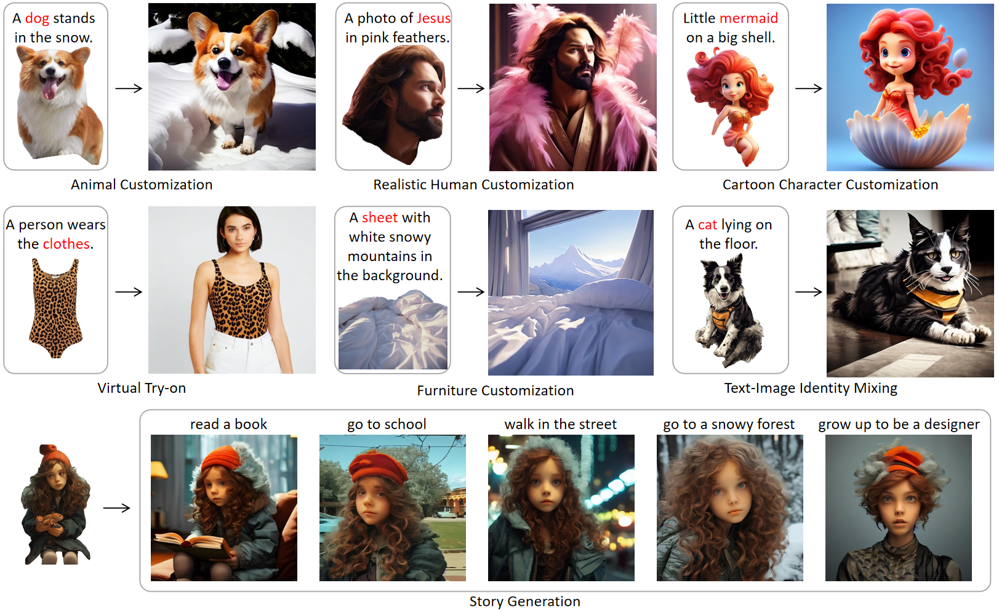
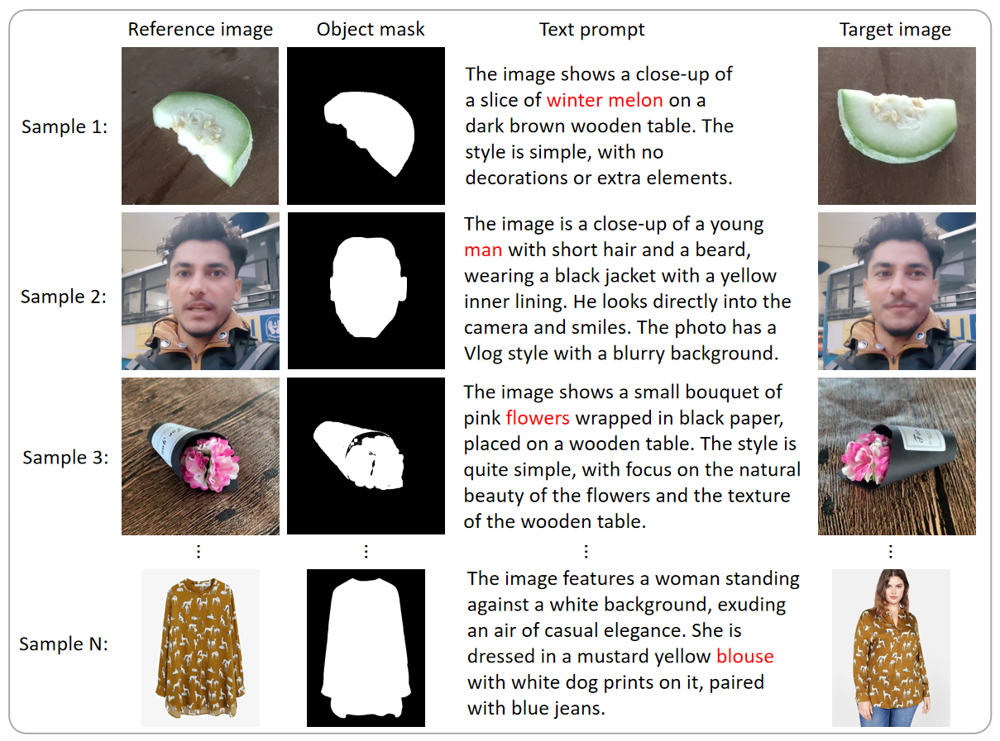
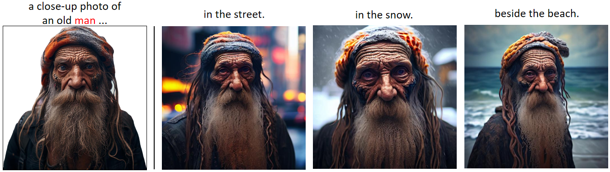
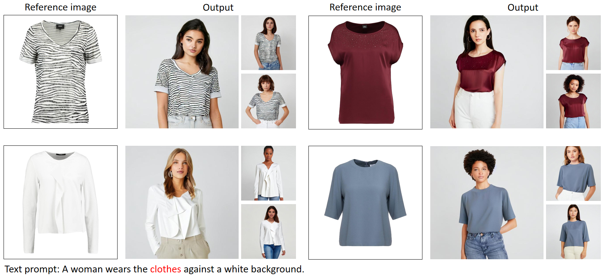
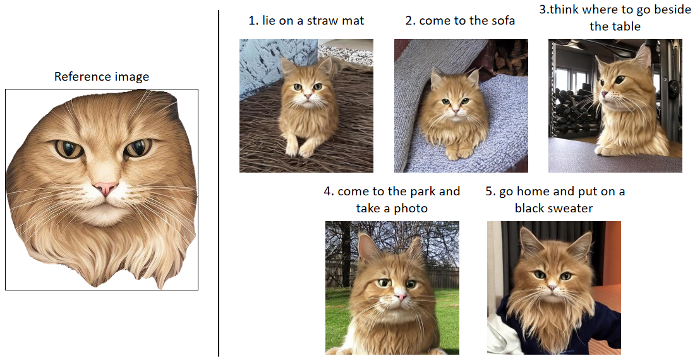
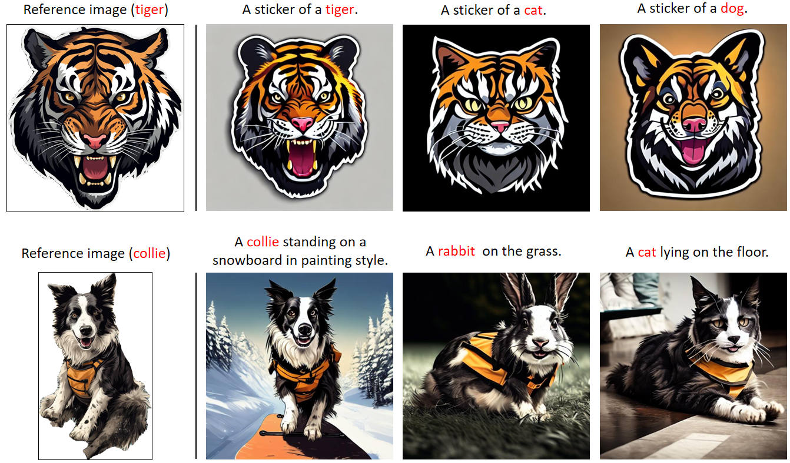
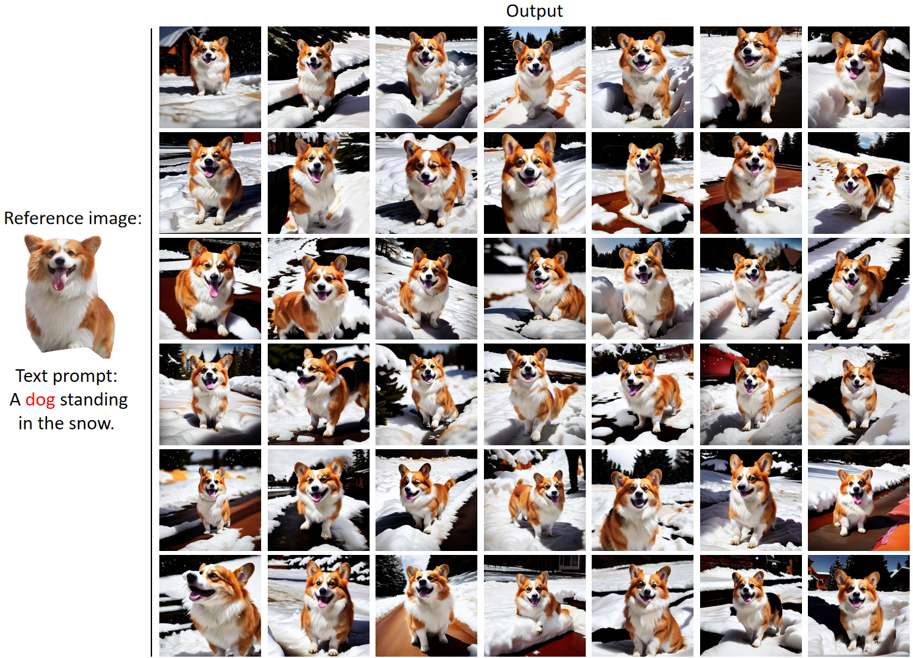
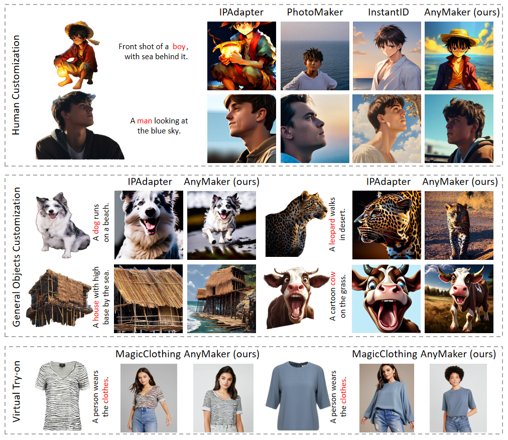

CustAny: Customizing Anything from A Single Example

Recent advances in diffusion-based text-to-image models have simplified creating high-fidelity images, but preserving the identity (ID) of specific elements, like a personal dog, is still challenging. Object customization, using reference images and textual descriptions, is key to addressing this issue. Current object customization methods are either object-specific, requiring extensive fine-tuning, or object-agnostic, offering zero-shot customization but limited to specialized domains. The primary issue of promoting zero-shot object customization from specific domains to the general domain is to establish a large-scale general ID dataset for model pre-training, which is time-consuming and labor-intensive. In this paper, we propose a novel pipeline to construct a large dataset of general objects and build the Multi-Category ID-Consistent (MC-IDC) dataset, featuring 315k text-image samples across 10k categories. With the help of MC-IDC, we introduce Customizing Anything (CustAny), a zero-shot framework that maintains ID fidelity and supports flexible text editing for general objects. CustAny features three key components: a general ID extraction module, a dual-level ID injection module, and an ID-aware decoupling module, allowing it to customize any object from a single reference image and text prompt. Experiments demonstrate that CustAny outperforms existing methods in both general object customization and specialized domains like human customization and virtual try-on. Our contributions include a large-scale dataset, the CustAny framework and novel ID processing to advance this field.
To promot the research of the general object customization, we construct the first large-scale general ID dataset, named as Multi-Category ID-Consistent (MC-IDC) dataset. Our dataset consists of approximately 315,000 samples in total with more than 10,000 categories, covering various types such as human faces, animals, clothes, human-made tools, etc. Each sample consists of a reference image, a segmentation mask of the object of interest in the reference image, a target image, and a text caption of the target image. The reference image with its segmentation mask provides ID information, the text caption of the target image offers semantic-level guidance for generation, and the target image serves as the ground truth.
Given a reference image and text prompt, our goal is to generate an image that retains the identity (ID) of the object in the reference while modifying non-ID elements, like motions and backgrounds, based on the prompt. Thus we introduce CustAny, a zero-shot text-to-image customization framework for general objects. We first use an ID extractor to capture ID information from the reference image with a segmentation mask. Dual-level ID injection is then applied to embed the ID into the diffusion model globally and locally, preserving text-editing capabilities. Finally, an ID-aware decoupling module separates ID details from non-ID elements, improving ID fidelity and text-editing accuracy.
Our AnyMaker is capable of generating high-ID-fidelity images given one single reference image, and simultaneously editing non-ID elements like posture or background in accordance with text prompts.
Given a piece of clothing, the AnyMaker can generate images of the clothing worn on a person.
Our AnyMaker can generate diverse images under the guidance of text prompts, while maintaining the same identity as the object of interest in the reference image, thereby enabling the creation of a cohesive narrative.
If the category of the interested object in the text prompt and that in the reference image is not the same, our AnyMaker can merge the two and form a new ID.
The AnyMaker can generate multiple ID-consistent images with diverse non-ID elements such as motions and orientations.
The AnyMaker exhibits outstanding capabilities of high-quality customization for general objects, and even beat task-specialized methods in the specific domains, such as human customization and virtual try-on, in terms of ID fidelity and text editability.
 @article{kong2024anymaker,
title={AnyMaker: Zero-shot General Object Customization via Decoupled Dual-Level ID Injection},
author={Kong, Lingjie and Wu, Kai and Hu, Xiaobin and Han, Wenhui and Peng, Jinlong and Xu, Chengming and Luo, Donghao and Zhang, Jiangning and Wang, Chengjie and Fu, Yanwei},
journal={arXiv preprint arXiv:2406.11643},
year={2024}
}